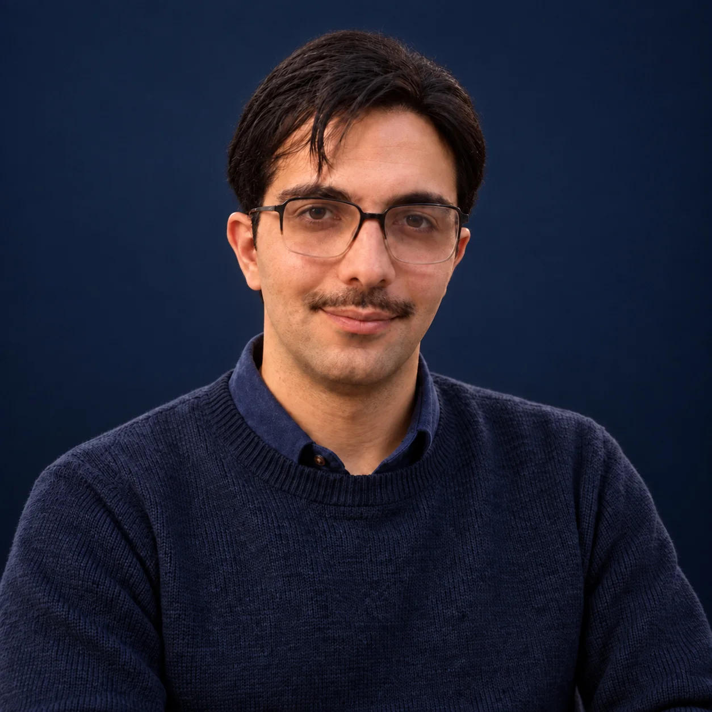

من به کسبوکارها کمک میکنم پروژههای دیجیتال و فرآیندهای پراکندهشان را به سیستمهای عملیاتی قابل اندازهگیری و توسعه تبدیل کنند.
اطلاعات در چتها و کاغذها گم میشود؛ پروژهها بدون شاخص جلو میروند؛ وابستگی به فرد بالا میرود و کیفیت خروجی نوسان دارد. من این حلقه را میبندم: از تحلیل وضعیت، تا طراحی سیستم و اجرای کنار تیم شما.
شناخت وضعیت موجود: فرآیندها، دادهها، ابزارهای در حال استفاده و گلوگاههای واقعی عملیات.
استانداردسازی فرآیند، تعریف شاخصهای اندازهگیری، انتخاب و پیکربندی ابزار.
پیادهسازی کنار تیم، آموزش، پیگیری شاخصها و بهبود مستمر تا سیستم خودش بایستد.
برنامهریزی، ساختار تیم، صف کار، کنترل کیفیت و شاخصهای عملیاتی — از بریف تا تحویل.
شاهد: سامانه تعمیرات لوازم خانگی سبزوار
پژوهش بازار و رقبا، تحلیل داده، مدل کسبوکار و چارچوب تصمیمگیری.
تعریف نیازمندی، معماری فرآیند و هماهنگی تیم توسعه برای سامانهای که از روز اول استفادهپذیر باشد.
شاهد: گروه فناوری ماتن
چرخهٔ کامل محتوا از استراتژی و تولید تا کنترل کیفی، بههمراه طراحی و راهاندازی وبسایت و پنل مدیریت.
شاهد: ۳۰+ مقاله رونیکس · ۱۲+ مقاله پولکی · وبسایت دوزبانهٔ روانیار
سامانه درخواست و پیگیری تعمیر لوازم خانگی؛ تعریف نیازمندی و مدیریت فرآیند توسعه — پروژه مشتری ماتن.
مدیریت تیم ۳–۴ نفره و طراحی فرآیند تحقیق تا انتشار برای رونیکس، پولکی، EscapeZoom و مکتبخونه: ۳۰+ مقاله رونیکس، ۱۲+ مقاله پولکی.
چهار پژوهش تحلیلی در ادبیات فارسی — از میکروفیکشن و شطحیات تا شاهنامه و مولوی — با چارچوب نظری مشخص.
وبسایت دوزبانهٔ فارسی/انگلیسی با بکاند Node.js، فرمهای سروری و پنل مدیریت امن — شبکهٔ حمایتی دسترسی به رواندرمانی؛ بههمراه اپلیکیشن اندروید.
یک بازبینی اولیه از پروژه یا فرآیند شما — بدون تعهد.
درخواست بررسی پروژهI help businesses turn scattered digital projects and processes into measurable, scalable operational systems.
Information gets lost across chats and papers; projects advance without metrics; person-dependency grows and output quality fluctuates. I close this loop: from status analysis, to system design and hands-on execution with your team.
Understanding the current state: processes, data, tools in use, and real operational bottlenecks.
Standardizing the process, defining measurable metrics, selecting and configuring tools.
Implementing alongside your team, training, tracking metrics, and continuous improvement until the system stands on its own.
Planning, team structure, work queues, quality control, and operational metrics — from brief to delivery.
Evidence: Sabzevar home-appliance repair system
Market and competitor research, data analysis, business-model framing, and decision frameworks.
Requirements definition, process architecture, and dev-team coordination for a system usable from day one.
Evidence: MATEN Technology Group
End-to-end content cycle from strategy to publication, plus web design and admin-panel delivery.
Evidence: 30+ Ronix articles · 12+ Poolaki articles · bilingual Ravan Yar site
Repair request & tracking system for home appliances; requirements definition and development process management — a MATEN client project.
Led a 3–4 person team and designed the research-to-publish process for Ronix, Poolaki, EscapeZoom and Maktabkhooneh: 30+ Ronix articles, 12+ Poolaki articles.
Four analytical studies in Persian literature — from microfiction and satahat to the Shahnameh and Mowlavi — with defined theoretical frameworks.
Bilingual Farsi/English site with a Node.js backend, server-side forms and a secure admin panel — a support network for access to Persian-language psychotherapy; plus an Android app.
A first look at your project or process — no commitment.